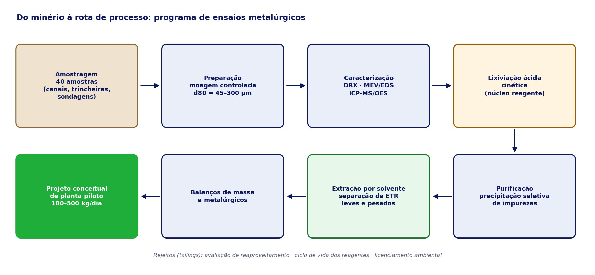
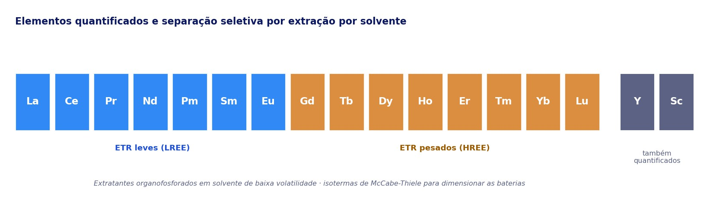
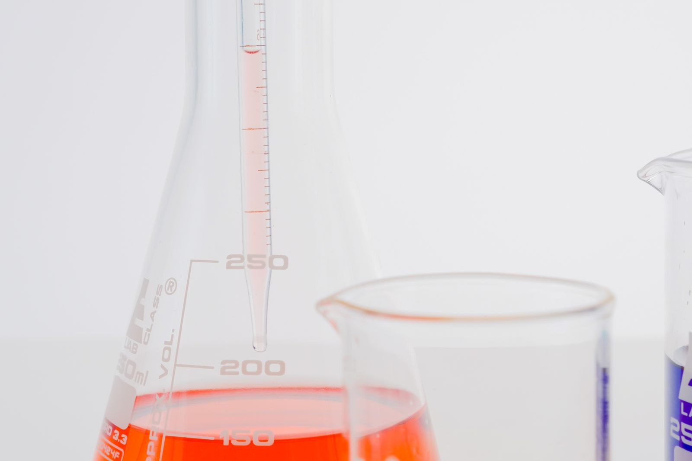
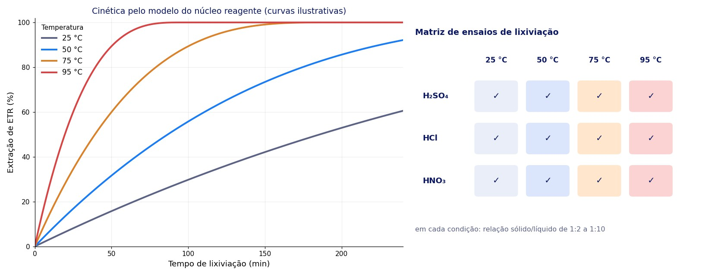
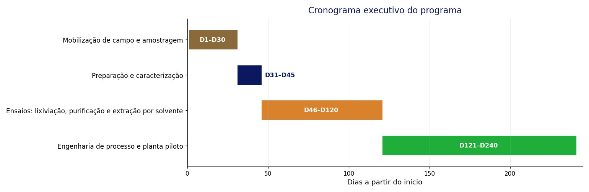
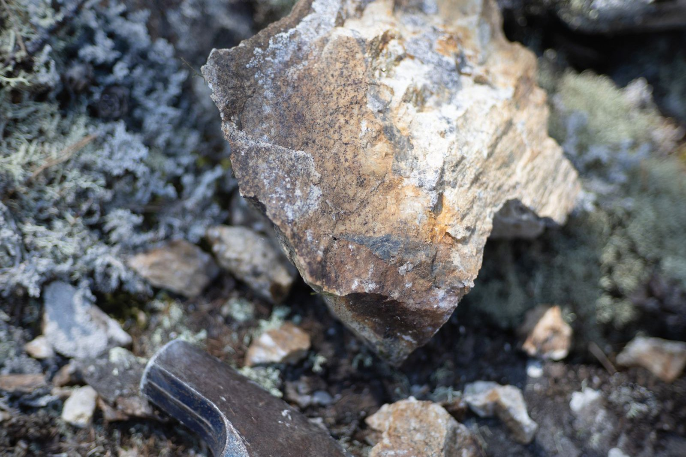
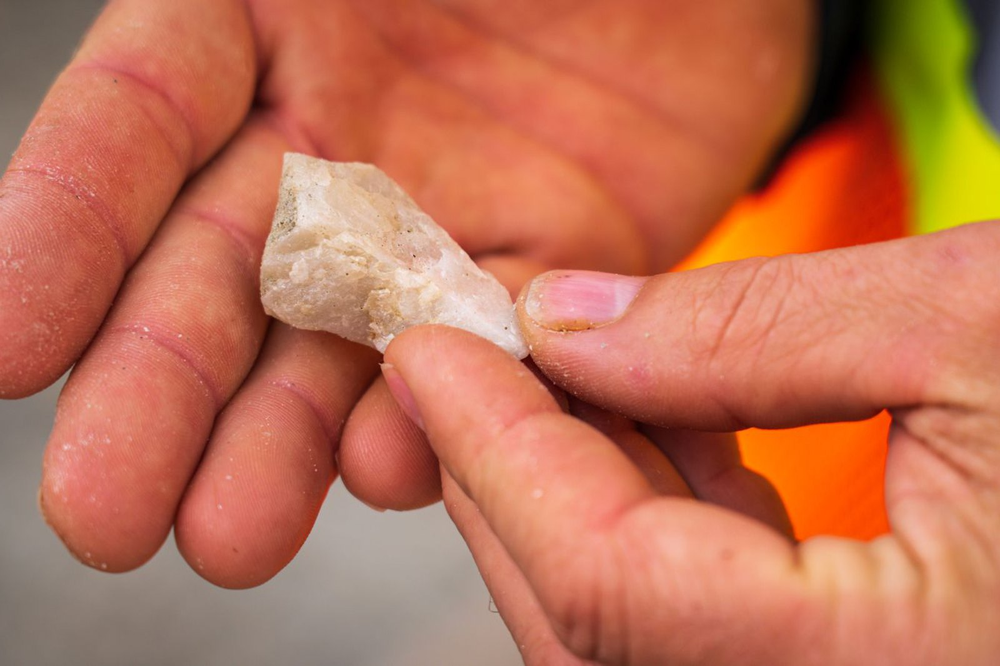

Problema / desafio do cliente
Os elementos de terras raras (ETR) são estratégicos para ímãs permanentes, motores elétricos, turbinas eólicas e eletrônicos. Antes de investir em uma operação, o titular de uma área de pesquisa precisa saber quais minerais carregam os ETR, quanto deles é possível extrair e com qual rota de processo.
A GETA foi chamada para estruturar um programa de ensaios metalúrgicos que respondesse a essas perguntas de forma rápida, dentro dos prazos legais da pesquisa mineral, e que levasse até o projeto conceitual de uma planta piloto.
Contexto e características do processo
- Área de pesquisa mineral de cerca de 12 ha no norte do Brasil, com autorização de pesquisa para terras raras.
- Prazo legal de 60 dias para iniciar os trabalhos de pesquisa, o que exigiu um cronograma em regime de urgência.
- As atividades de campo dependem do licenciamento ambiental correspondente.
- Minerais portadores de ETR esperados: monazita, xenotima e bastnäsita, associados a minerais de ganga.
Diagnóstico e dados analisados
- Sem caracterização mineralógica, não é possível saber o grau de liberação dos minerais nem escolher a moagem e o reagente adequados.
- A extração de ETR depende fortemente do ácido, da temperatura e da relação sólido/líquido, e o custo de reagentes pesa no projeto.
- Os ETR leves e pesados têm valores de mercado muito diferentes: separá-los de forma seletiva é essencial para a viabilidade.
- Rejeitos e reagentes precisam ser avaliados desde o início para não comprometer o licenciamento.
Metodologia utilizada
- Amostragem: 40 amostras de canais, trincheiras e sondagens, com mapeamento geológico detalhado da área.
- Preparação: moagem controlada com d80 entre 45 e 300 µm.
- Caracterização mineralógica avançada:
- difração de raios X (DRX) com análise quantitativa de fases (Rietveld);
- microscopia eletrônica de varredura (MEV/EDS) para graus de liberação e associações texturais;
- ICP-MS/OES após digestão ácida total, para quantificar toda a série dos lantanídeos (La a Lu), ítrio e escândio.
- Lixiviação cinética com H₂SO₄, HCl e HNO₃, a 25, 50, 75 e 95 °C e relação sólido/líquido de 1:2 a 1:10, interpretada pelo modelo do núcleo reagente (shrinking core model).
- Purificação por precipitação seletiva de impurezas.
- Extração por solvente com extratantes organofosforados e isotermas de McCabe-Thiele para separar ETR leves e pesados.
- Engenharia de processo: balanços de massa e metalúrgicos e projeto conceitual da planta piloto.

Solução de engenharia desenvolvida
O programa foi desenhado para gerar, em sequência, as informações necessárias para cada decisão:
- Onde estão os ETR: caracterização mineralógica e química completa.
- Como extraí-los: matriz de ensaios de lixiviação que define o melhor ácido, a temperatura e a relação sólido/líquido, com a cinética de dissolução modelada.
- Como separá-los: extração por solvente seletiva entre ETR leves (LREE) e pesados (HREE), com o número de estágios definido pelas isotermas.
- Como escalar: balanços de massa e metalúrgicos e projeto conceitual de uma planta piloto contínua de 100 a 500 kg/dia.

Tecnologias e processos envolvidos
- Mineralogia: DRX com refinamento de Rietveld e MEV/EDS.
- Química analítica: ICP-MS e ICP-OES após digestão ácida total.
- Hidrometalurgia: lixiviação ácida, precipitação seletiva e extração por solvente com extratantes organofosforados.
- Modelagem: cinética pelo modelo do núcleo reagente e isotermas de McCabe-Thiele.
- Engenharia de processo: balanços de massa e metalúrgicos para o projeto conceitual.

Modelagem, simulação e ferramentas computacionais
Os ensaios de lixiviação cobrem três ácidos em quatro temperaturas, com diferentes relações sólido/líquido. As curvas de extração ao longo do tempo serão ajustadas ao modelo do núcleo reagente, que indica se a velocidade é controlada pela reação química na superfície da partícula ou pela difusão na camada de produto, informação-chave para dimensionar reatores e tempos de residência.

Resultados obtidos
- Programa de ensaios completo, do campo à planta piloto, organizado para cumprir os prazos legais da pesquisa mineral.
- Plano analítico que quantifica toda a série dos lantanídeos, além de ítrio e escândio.
- Matriz experimental de lixiviação e estratégia de separação seletiva LREE/HREE.
- Caminho definido até o projeto conceitual de uma planta piloto contínua de 100 a 500 kg/dia.
- Sustentabilidade incorporada desde o início: avaliação do reaproveitamento dos rejeitos e do ciclo de vida dos reagentes, em apoio ao licenciamento ambiental.

CAPEX/OPEX e análise técnico-econômica
Quando aplicável: estimativas de CAPEX e OPEX, comparação entre alternativas, custo por m³ ou por tonelada, payback.
Escopo e responsabilidades da GETA
A GETA é responsável por:
- planejamento técnico e cronograma do programa de ensaios;
- definição do plano de amostragem e de caracterização;
- desenho dos ensaios de lixiviação, purificação e extração por solvente;
- modelagem cinética e balanços de massa e metalúrgicos;
- projeto conceitual da planta piloto e avaliação de sustentabilidade.
Principais entregáveis
- Programa de ensaios metalúrgicos e cronograma executivo.
- Relatório de caracterização mineralógica e química.
- Resultados de lixiviação, purificação e extração por solvente.
- Balanços de massa e metalúrgicos.
- Projeto conceitual de planta piloto de 100 a 500 kg/dia.
Galeria

